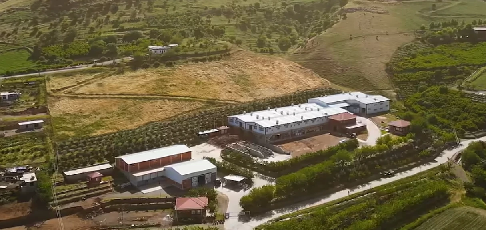
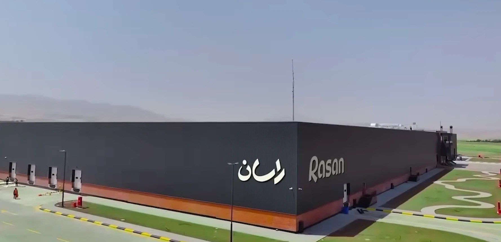
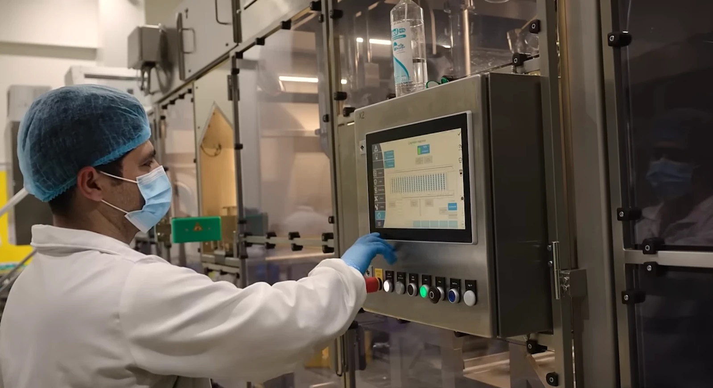
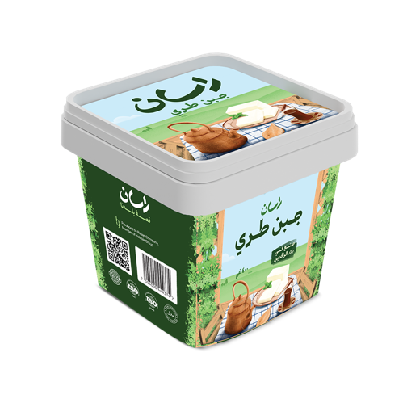
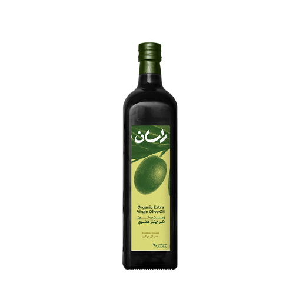
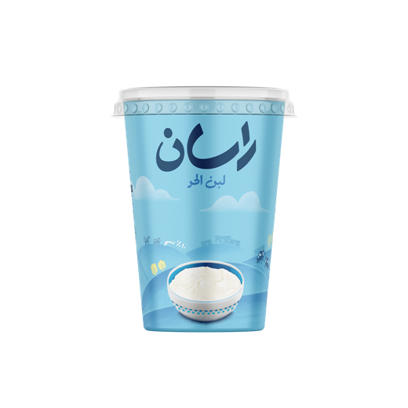
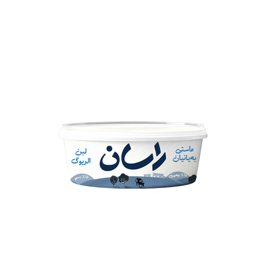
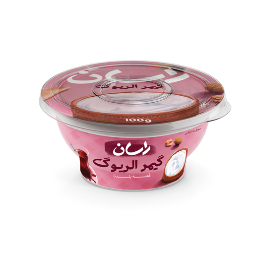

Cheese & Olive Oil Breakfast
Fresh white cheese, a drizzle of extra virgin olive oil, herbs, tomatoes and warm bread — an Iraqi morning classic.
Read recipe
From our local farms in Halabja to your table — fresh yogurt, cheese, ayran, labneh and cold-pressed olive oil, made the natural way.







Rasan's own cow and goat farms in Halabja, side by side with local farmers who bring us fresh milk every morning.
Insulated Rasan tankers carry the milk, still chilled, from the farms and collection points straight to the factory.
Our environment-friendly factory in Halabja receives every load and tests it before anything is made.
Modern lines and strict hygiene turn fresh milk into yogurt, cheese, ayran and labneh.
Delivered fresh to stores across Kurdistan and Iraq — and onto your family's table.
Rasan is the dairy and food brand of Halabja Group. We pair traditional recipes with modern, hygienic production — and we buy from local farmers, so every jar of yogurt and every bottle of olive oil supports the region that made it.
Simple, traditional dishes that let fresh dairy and good olive oil shine.
Fresh white cheese, a drizzle of extra virgin olive oil, herbs, tomatoes and warm bread — an Iraqi morning classic.
Read recipe
Flaky kahi pastry topped with thick Rasan qaymar and a ribbon of syrup — the ultimate weekend treat.
Read recipeThe olive oil has the fresh, peppery character I look for. I cook with it every day in my kitchen.
Having a factory like this in Halabja means jobs for our young people and products we are proud of.
Rasan's work with olive seedlings is helping farmers plant for the future of the region.
Buying olives directly from our farmers keeps the local economy alive. It is a blessing for many families.
New products, recipes and stories from our farms — straight to your inbox.